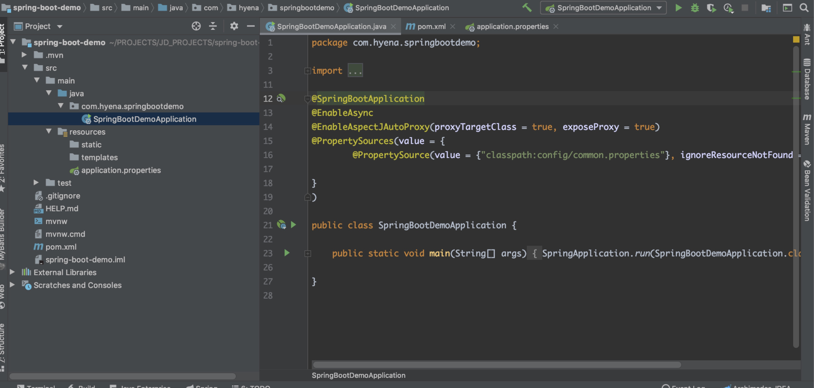
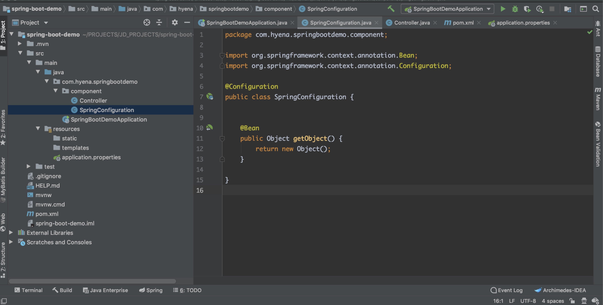
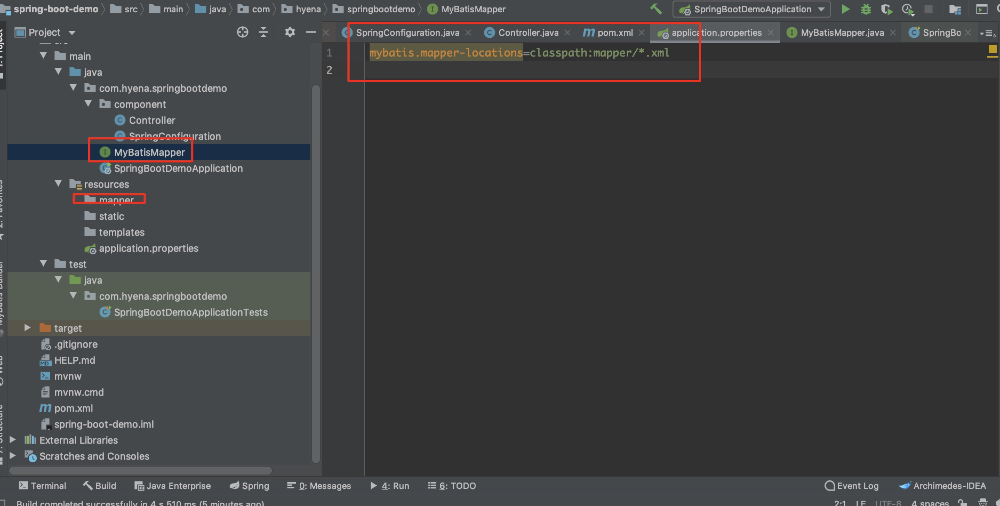

Spring项目配置
目录：
1.简介
Spring Boot makes it easy to create stand-alone,production-grade Spring based Applications that you can "just run".
we take and opinionated view of the Spring platform and third-party libraries so you can get started with minimum fuss. Most Spring boot applicaitons need Spring Configuration.
我们在使用Spring Boot时只需要配置相应的Spring Boot就可以用所有的Spring组件，简单的说，spring boot就是整合了很多优秀的框架，不用我们自己手动的去写一堆xml配置然后进行配置。
2.Spring-boot项目结构


Spring-Boot/Spring项目的两个主要配置就是，配置类/x-config.xml，属性文件。这是Spring项目的重点。
配置类/x-config.xml提供Spring项目运行需要的对象
配置@SpringBootApplication注解相当于配置了@Configuration ,@EnableAutoConfiguration ,@ComponentScan
Indicates a configuration class that declares one or more @Bean methods and also triggers auto-configuration and component scanning .This is a convenience annotation that is equivalent to declaring @Configuration, @EnableAutoConfiguration and @ComponentScan.
3.Spring-boot配置
1.maven配置
<dependency>
<groupId>org.springframework.boot</groupId>
<artifactId>spring-boot-starter-web</artifactId>
<exclusions>
<exclusion>
<groupId>org.springframework.boot</groupId>
<artifactId>spring-boot-starter-logging</artifactId>
</exclusion>
<exclusion>
<groupId>org.springframework.boot</groupId>
<artifactId>spring-boot-starter-tomcat</artifactId>
</exclusion>
</exclusions>
</dependency>
<dependency>
<groupId>org.springframework.boot</groupId>
<artifactId>spring-boot-starter-test</artifactId>
<scope>test</scope>
</dependency>
<dependency>
<groupId>org.springframework.boot</groupId>
<artifactId>spring-boot-starter-log4j2</artifactId>
<version>1.5.8.RELEASE</version>
</dependency>
<dependency>
<groupId>org.springframework.boot</groupId>
<artifactId>spring-boot-starter-tomcat</artifactId>
<scope>provided</scope>
</dependency>
<dependency>
<groupId>org.mybatis.spring.boot</groupId>
<artifactId>mybatis-spring-boot-starter</artifactId>
<version>2.0.0</version>
</dependency>
2.SpringBootDemoApplication配置
SpringBoot项目作为一个annotation-driven的项目，配置大都是依赖注解
@SpringBootApplication
@EnableAsync
@EnableTransactionaManageMent
@EnableAspectJAutoProxy(proxyTargetClass = true, exposeProxy = true)
@PropertySources(value = {
@PropertySource(value = {"classpath:config/common.properties"}, ignoreResourceNotFound = true, encoding = "utf-8")})
@Import(SpringConfiguration.class)
public class SpringBootDemoApplication {
public static void main(String[] args) {
SpringApplication.run(SpringBootDemoApplication.class, args);
}
}
3.SpringBoot项目集成MyBatis
引入依赖
<dependency>
<groupId>org.mybatis</groupId>
<artifactId>mybatis</artifactId>
<version>3.5.4</version>
</dependency>
<dependency>
<groupId>org.mybatis.spring.boot</groupId>
<artifactId>mybatis-spring-boot-starter</artifactId>
<version>2.0.0</version>
</dependency>
项目结构

app.properties里面添加mybatis.mapper-locations=classpath:mapper/*.xml。MyBatisMapper接口上面使用@Mapper注解
4.特点
- Create stand-alone Spring applications 快速创建独立运行的Spring项目
- Embed Tomcat, Jetty or Undertow directly (no need to deploy WAR files) 内嵌Tomcat，应用无需打成WAR包
- Provide opinionated 'starter' dependencies to simplify your build configuration starters自动依赖简化配置
- Automatically configure Spring and 3rd party libraries whenever possible 自动配置Spring和第三方库
- Provide production-ready features such as metrics, health checks, and externalized configuration 准生产环境的运行时应用监控
- Absolutely no code generation and no requirement for XML configuration 无代码生成和XML配置
5.总结
- 学会创建Spring-Boot项目
- 了解Spring-Boot项目结构
- 了解Spring-Boot配置